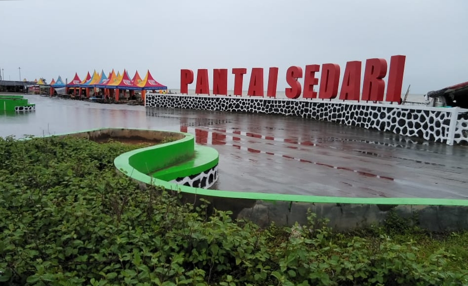

Tentang Pantai Sedari
Pantai Sedari terletak di Kecamatan Cibuaya, Kabupaten Karawang, Jawa Barat. Pantai ini terkenal dengan keindahan pasir putihnya, ombak yang tenang, serta suasana alami yang cocok untuk rekreasi keluarga dan pecinta fotografi.
Pantai Sedari juga menjadi salah satu destinasi unggulan Karawang, dengan daya tarik seperti sunrise dan sunset yang indah, serta wisata kuliner hasil laut segar.